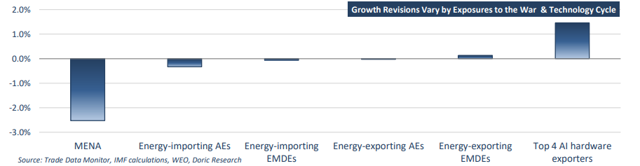

There is a growing paradox at the heart of the global economy. After half a decade of successive shocks – including the pandemic, the inflation surge, the most aggressive monetary tightening cycle in decades, trade fragmentation and escalating geopolitical tensions – the world economy continues to expand. Yet beneath this resilience lies an increasingly uneven landscape where growth is no longer synchronized, inflation remains stubborn, and geopolitical developments are exerting greater influence over economic performance than traditional business cycles. For much of the past decade, the global economy was characterized by synchronized growth cycles, integrated supply chains and relatively predictable trade patterns. Today, that framework appears increasingly obsolete. The latest IMF World Economic Outlook depicts a global economy navigating a period of structural fragmentation, where growth outcomes are being shaped less by traditional business cycles and more by geopolitical alignments, energy security concerns and technological leadership. Against this backdrop, the global economy continues to display remarkable resilience. Global GDP is projected to expand by 3.0 percent in 2026 before accelerating to 3.4 percent in 2027, broadly unchanged from the IMF's previous forecasts. Risks remain firmly skewed to the downside. A renewed escalation in the Middle East could trigger further commodity price volatility and disrupt critical trade corridors. Trade fragmentation remains a growing concern, while financial markets could face setbacks should expectations surrounding artificial intelligence prove overly optimistic. Nevertheless, upside potential remains. A faster normalization of energy markets, stronger technology investment and renewed international cooperation could support a more robust expansion than currently anticipated.
Beneath these seemingly stable headline figures, however, lies a far more complex reality. The world is becoming increasingly bifurcated between economies benefiting from the accelerating AI-driven technology cycle and those facing the burden of higher energy costs and weaker participation in global value chains. The IMF's assessment highlights two opposing forces currently shaping economic activity. On one side stands the inflationary shock generated by geopolitical tensions and elevated commodity prices. On the other lies a powerful wave of technology-led investment, productivity gains and capital expenditure associated with artificial intelligence and digital infrastructure. The interaction between these forces is producing highly divergent growth outcomes across regions and sectors, creating both opportunities and vulnerabilities for global trade. Although fears of a severe economic slowdown have once again proven premature, the quality of growth is changing. The era of broad-based globalization is gradually giving way to a more fragmented landscape in which trade routes, capital flows and industrial strategies are increasingly influenced by geopolitical considerations.
The outlook for advanced economies remains one of resilience rather than dynamism. Aggregate growth is projected at 1.7 percent in 2026 and 1.8 percent in 2027, with significant variation among major economies. The United States continues to demonstrate exceptional economic flexibility, supported by robust private consumption, fiscal spending and substantial investment in technology-related sectors. Europe presents a more challenging picture. Elevated energy costs, weak industrial competitiveness and subdued consumer confidence continue to constrain activity. While recession risks have diminished, growth remains structurally weak. Japan and the United Kingdom face similar challenges, with demographic pressures and modest productivity growth limiting expansion potential. Overall, advanced economies appear capable of sustaining moderate growth, but structural impediments – including ageing populations, elevated public debt burdens and lower productivity growth outside technology-intensive industries – continue to cap longer-term potential.
Emerging and developing economies remain the locomotive of global growth, even as performance becomes increasingly uneven. The IMF expects growth to slow to 3.8 percent in 2026 before rebounding to 4.5 percent in 2027. Asia remains the standout region. Economies integrated into global technology supply chains are benefiting from strong investment flows, particularly in semiconductors, data centers and advanced manufacturing. Vietnam, Malaysia and other exportoriented economies continue to attract capital as multinational corporations diversify production networks. Commodity exporters are also benefiting from improved terms of trade resulting from higher energy prices. Conversely, many lower-income commodityimporting nations face mounting pressures from rising import bills, constrained fiscal capacity and tighter financing conditions. This divergence underscores an increasingly important theme: participation in global growth is becoming more selective.
China and India remain the principal drivers of global commodity demand and, consequently, the dry bulk market. China's economy is projected to expand by 4.6 percent in 2026, extending its gradual structural slowdown. Yet GDP growth alone understates its significance. China remains the world's largest consumer of industrial raw materials, accounting for roughly three-quarters of global seaborne iron ore trade while underpinning demand for coal, bauxite and other bulk commodities. Although the property sector remains weak, infrastructure spending, manufacturing and export-oriented industries continue to support raw material imports at historically elevated levels. India, by contrast, continues to provide the strongest incremental growth story. With GDP forecast to expand by 6.4 percent, rapid urbanisation, infrastructure development and resilient domestic demand are driving higher imports of coal, fertilizers and steelmaking raw materials. While China remains the dominant source of demand in absolute terms, India is increasingly emerging as the marginal growth engine for global dry bulk trade.
For the dry bulk market, the IMF's latest projections suggest that the pace of growth alone is no longer sufficient to gauge commodity demand. Its composition and geographic distribution have become equally important. While global GDP is expected to moderate, continued infrastructure investment across Asia, industrialization in emerging markets and energy security concerns should continue to underpin demand for key bulk commodities. Meanwhile, geopolitical fragmentation is reshaping trade flows through supply diversification and longer-haul cargo movements, supporting tonne-mile demand. Although slower trade growth, persistent inflation and geopolitical risks are likely to sustain freight market volatility, the broader macroeconomic backdrop remains supportive. Rather than signalling weaker commodity demand, the IMF's outlook points to an evolving trade landscape, with emerging Asia continuing to drive incremental dry bulk demand.

Data source:Doric